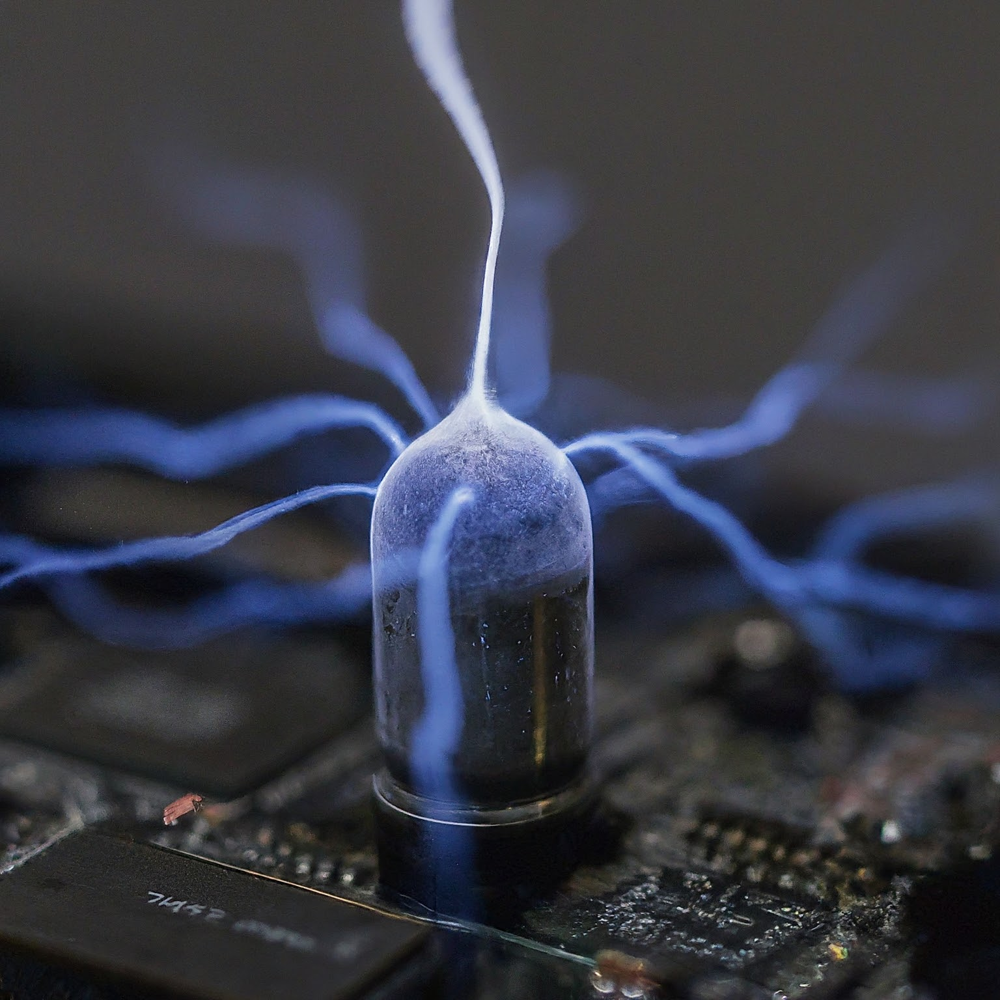

1. PC Building Websites

Custom PC part picking websites are incredibly helpful for someone who is building their first PC and dont know what components they accually need. These part picking sites are setup so you can go down the line choosing your desired parts untill you have selected every part nessesary to build a functining PC all on one webpage.
Helpful features about these sites are:
- Totaling up the sum of all components.
- Displaying the total power wattage your PC will consume.
- Making sure all chosen PC parts are compatible with each other.
- can help you change parts on an existing PC.
this recomended custom PC part Picker. offical PCbuilder website.
2. Cable Management

Cable management is an importent part to building your custom PC but not nessasary. If you care at all what you want your PC to look like, your going to want to succesfully cable manage your build. The first thing you can do to have good cable management is choosing a PC case that is advanced enough to slots and paths for your cords to follow. When it comes down to it, if managing your cables seems to complicated then dont worry about it. It could slightly impede airflow and look ugly but your computer will still work either way.
I recomend watching Linus Tech Tips for tutorials or just entertainment.
Here is an advanced guide to perfectly cable managing your PC. "ultimate cable management guide"
3. Install Parts Carfully

Most of the components on a computer are fragil and expensive. It is important to install your components without to much force or you could risk breaking something. The components like the RAM, CPU, and GPU, all have slots on the motherboard that they will slip into but if you are having trouble installing one of these parts instead of pressing harder try watching a tutorial on how to install that specific part because its always better safe than sorry.
The best way to ensure the sucess of building your own PC is to take as much time as possible. from start to complete it can take up to three or four hours for a beginner.
4. Manage ESD (Electrostatic-Discharge)
electrostatic discharge is basically static electricity that can result in damage to the sensetive electronic components, including PCs. The damage occurs when the components, such as microprocessors, that are designed to opperate with a sepcific voltage range gets a spike of electricity. This damage is irreversable. The damage can weaken components and gradually degrading their preformance therefore shortening the lifespan.
Ways to prevent this are:
- Work on a hard suface.
- Dont use static-friendly clothing.
- touch grounded metal objects every couple of mintues.
- Avoide standing on carpet